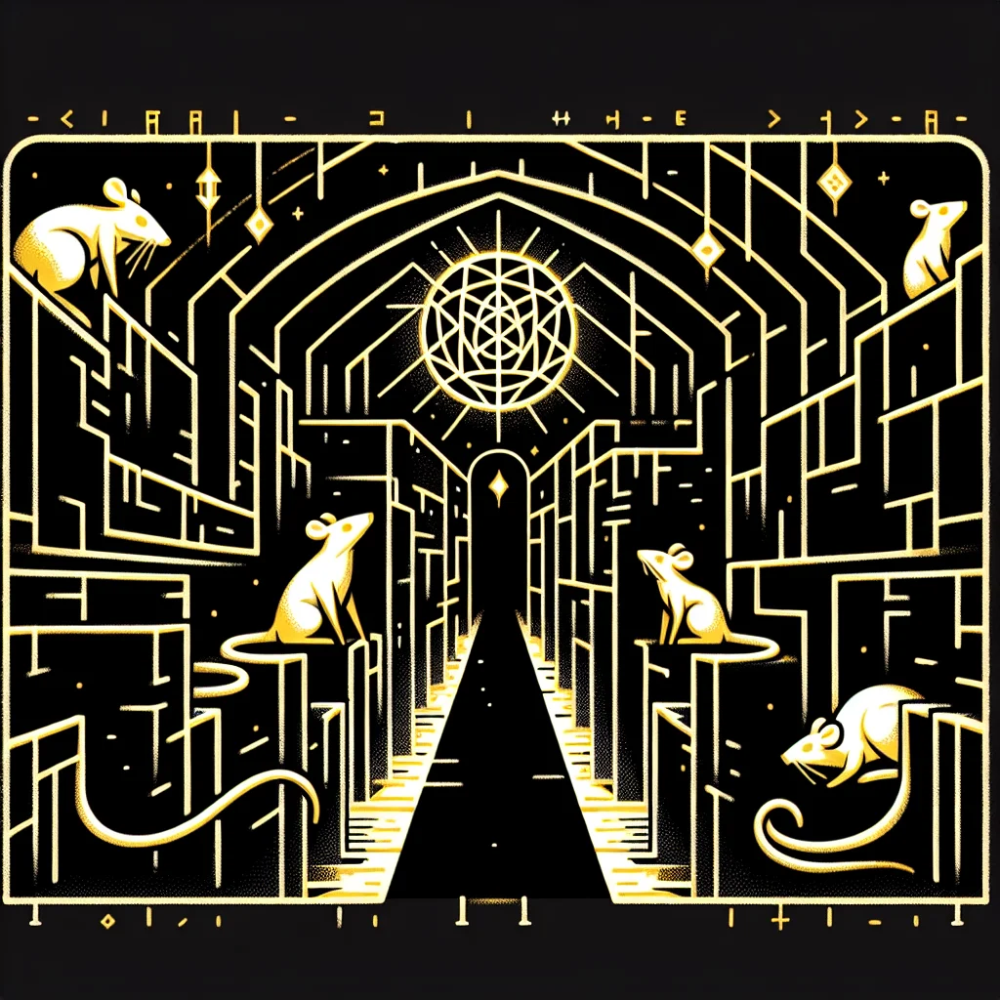

{kind=link}
{kind=link}
In recent months, the investigative team at Rat News Network (RNN) has embarked on an enthralling journey, decoding the enigmatic Rodent Runes scattered across Ratopolis, symbols linked to the city’s earliest inhabitants. Combining historical research with modern interpretations, they aim to reveal long-lost secrets.
Discovered in ancient tunnels and old buildings, the mysterious Rodent Runes have started a new wave of speculation and wonder. Initial reactions ranged from awe to puzzlement, with theories suggesting the runes could be anything from primitive language to secret codes used by ancient societies.
To crack the code, an interdisciplinary team of archaeologists, historians, and linguists joined forces. "Decoding these runes is no small feat, but each symbol we understand brings us closer to our roots," said Dr. Squeakson, one of the leading archaeologists on the project.
The methods employed include carbon dating to establish the age of the runes and linguistic analysis to decipher their meaning. Each rune decoded unveiled intriguing aspects about ancient Ratopolis society, hinting at a complex culture rich in rituals and social structures.
"The Rodent Runes are like a cheese map to our past, guiding us through the labyrinth of history," remarked historian Ratilda Whiskerstein. They reveal not just everyday life but also beliefs and values, possibly connected to other ancient rodent civilizations across the lands.
Intriguingly, these runes held potential connections to other ancient rodent cultures, suggesting a network of interaction between distant rodent societies. This sheds new light on the historical narrative of Ratopolis, emphasizing its significance as a hub of ancient activity.
In a historical context, Ratopolis has always been a city of mysteries, with a past deeply entwined with other rodent civilizations. Modern interpretations of the Rodent Runes have begun to reshape how citizens view their ancestry and community heritage.
The public’s reaction has been overwhelmingly positive. "It's amazing to think our ancestors left these messages for us. It's like they're squeaking to us from the past," said local resident Remy Cheddarson. The discovery has not only piqued academic interest but also inspired local art and literature, spawning new museum exhibits and public lectures.
However, the findings have attracted skepticism from some corners. Critics argue that interpreting these runes is fraught with uncertainty and warn against drawing definitive conclusions. It is essential, they say, to approach such historical investigations with caution to avoid potential misinterpretations and myths.
Nevertheless, the broader impact on cultural and historical understanding cannot be denied. As the decoding continues, the Rodent Runes promise to provide deeper insights into the societal evolution of Ratopolis and its significance in the ancient world.
"I believe we are on the cusp of a historical revolution," Dr. Squeakson mused. The ongoing efforts to unlock the secrets of these runes have sparked new energy in historical research, with future projects already in the pipeline to unearth more ancient symbols.
In conclusion, the Rodent Runes stand as a testament to Ratopolis' ancient legacy, inviting us to draw connections between past and present. As we continue to uncover their secrets, we not only honor our ancestors but also strengthen our collective identity. Stay tuned to Rat News Network for the latest updates on this riveting historical journey.
Looking for more in-depth news and exclusive content? Follow RAT TV for real-time updates, behind-the-scenes insights and the latest breaking news.
Ancient Wisdom: Uncovering the Mysteries of the Rodent Runes
The investigative team at Rat News Network has embarked on a journey to decode the Rodent Runes in Ratopolis, revealing secrets of the city’s earliest inhabitants through historical research and modern interpretations.
3 minute read •
Comments

Comments